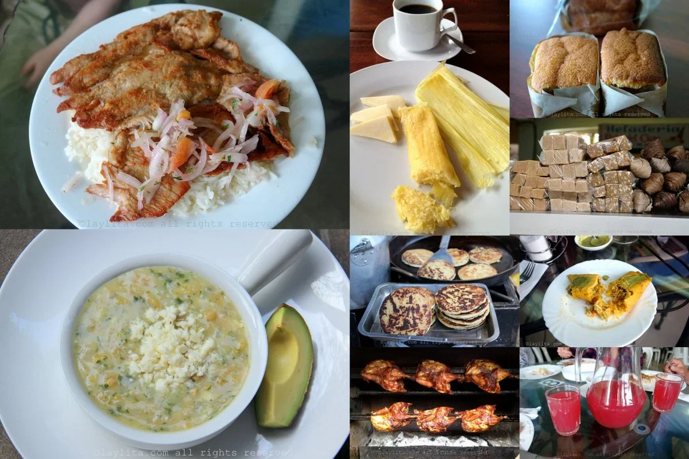
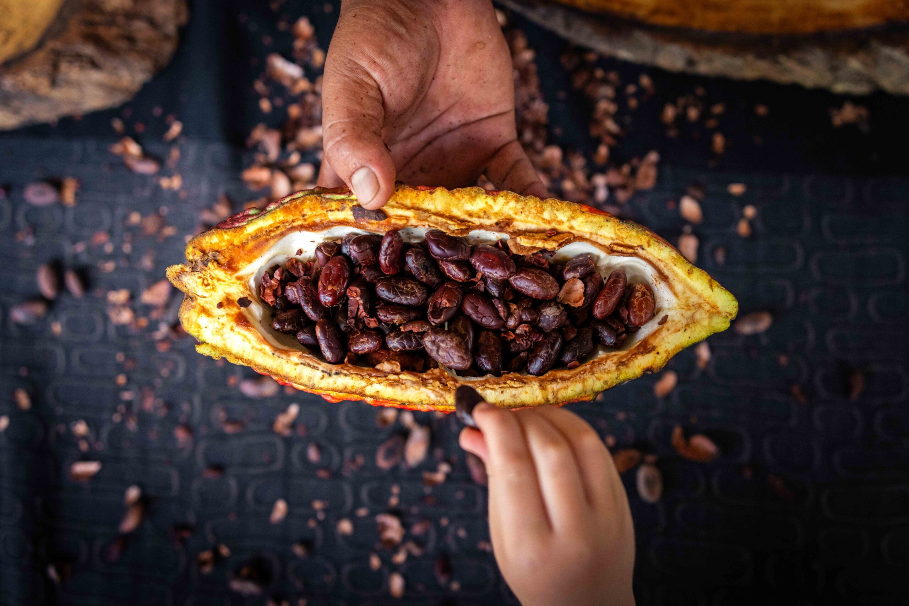

SABORES ANCESTRALES
Ecuadorador es un país con una gran diversidad cultural y geográfica,refleja su patrimonio es una gastronomía ancestral llena de tradiciones. Cada plato cuenta una historia que transmitida de generación en generación, funsionando las influencias de las comunidades indígenas, afroecuatorianas y de las diversas regiones del país. en la reguión andina,la cocina ancestral cobra vida mediante técnicas tradicionales comola pachamanca, una preparacion que involucra enterrar los alimentos y cocinarlos con piedras volcánicas ardientes, lo que permite una conexión única con la tierra y sus frutos. Esta técnica ha sido preservada durante siglos por comunidades indígenas como los kichwas Caranquis en la provincia de Imbabura, y hoy en día se ha convertido en un atractivo turístico que busca mantener viva esta tradición.
-

- 
- 
Ritual para conectarse con la Pachamama
Como toda técnica, la Pachamama requiere de preparación. Y es que antes de disponerse a cocinar los alimentos, los indígenas ecuatorianos acostumbran a realizar un ritual energizante para quitar la negatividad y pedir permiso a la tierra para poder cocinar y disfrutar de los productos que de ella emanan. "Desde nuestra visión, la naturaleza es un lugar sagrado y debemos ingresar realizando ceremonias que nos ayuden a entrar con armonía a la Allpa Mama (madre tierra)", indicó el encargado de los rituales, Segundo De la Torre.
La olla de la tierra
El principio de la pachamanca es crear una especie de olla de presión en un hueco de la tierra, donde se colocan las piedras volcánicas previamente calentadas a fuego como una base sobre la que se disponen hojas de chilca que hace las veces de aislante. Sobre ese hueco cavado se reparten alimentos vegetales como el maíz o habas, y diferentes tipos de carne. Criollo asegura que "de las piedras emanan micronutrientes, que se adhieren a los alimentos", que junto a los materiales aislantes le otorgan "un sabor muy especial y diferente a la comida". La cocción dura alrededor de tres horas y los visitantes ayudan en el proceso de creación de la pachamanca. "Es como una minga (trabajo colectivo con fines sociales, en kichwa)", dice María Tambi, madre del joven emprendedor, quien indica que prefiere cocinar de esta manera porque "las ollas o aluminios hacen daño a nuestra salud". Esta cocina bajo tierra también se practica en otras zonas de la serranía ecuatoriana, como en Cayambe, en la provincia de Pichincha, donde los indígenas cayambis celebran el "Cápac Raymi", fiesta en honor al sol, con comida proveniente del suelo.
La tierra nos da de comer
El objetivo de Pondo Wasi es que se retomen las costumbres y tradiciones de los pueblos originarios de la sierra y no se pierda el conocimiento ancestral. "A los jóvenes indígenas ya no les interesa, incluso nosotros mismos como ecuatorianos, poco nos importa saber sobre nuestra cultura sino que preferimos salir a otros países", reconoce Criollo. La técnica de los hornos de la tierra era empleada en el Neolítico y en Europa se conocen algunos vestigios, pero se desarrolló en Latinoamérica en países como Perú, Chile, Argentina o Ecuador, donde sigue utilizándose hasta el día de hoy. "La tierra nos da de comer", sostiene el indígena ecuatoriano, quien considera que el ser humano no agradece lo suficiente todos los beneficios que brinda, sino por el contrario, lo único que hace es "explotarla, contaminar y cortar arboles".